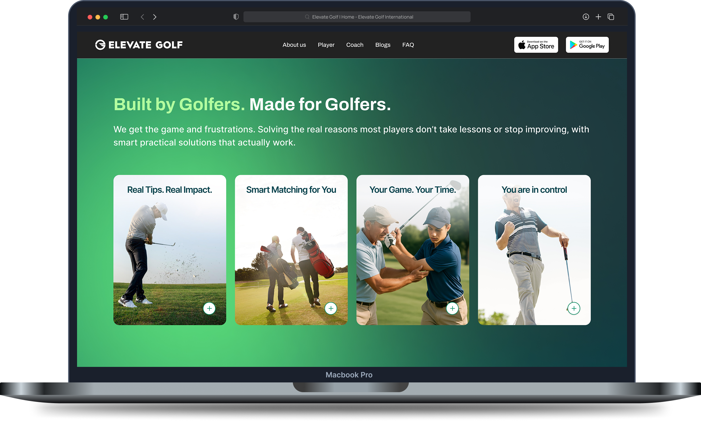
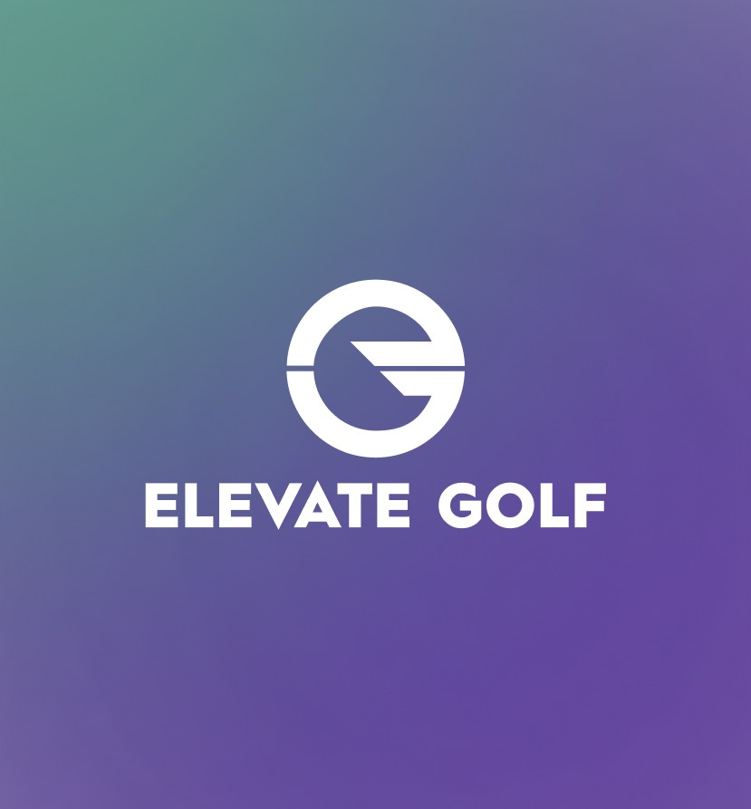
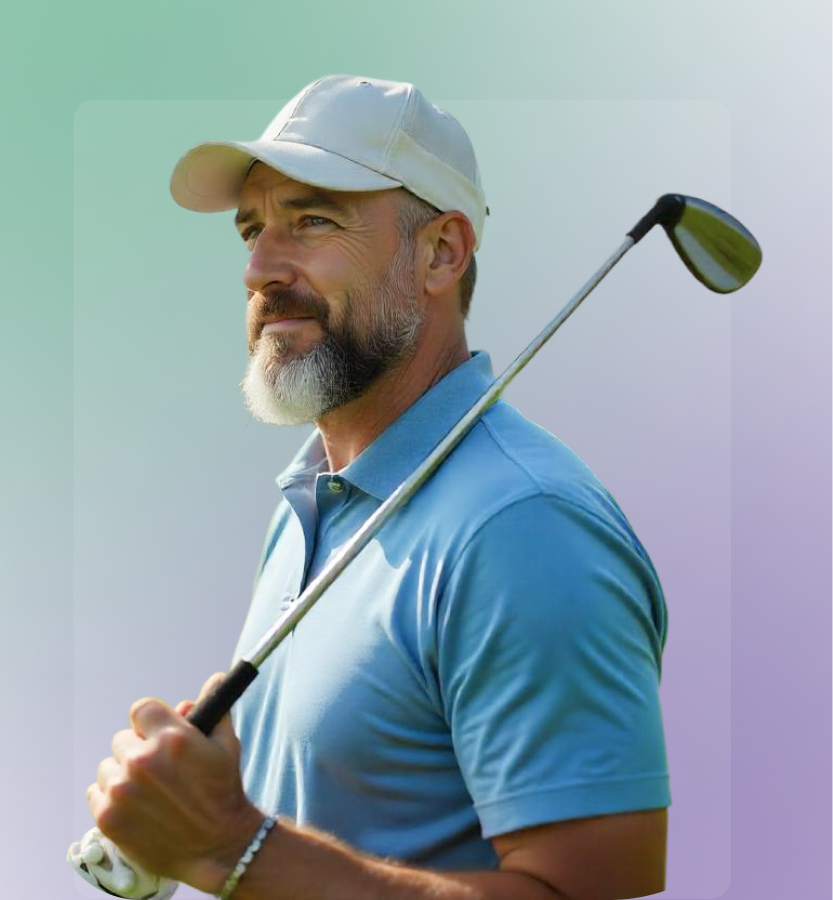
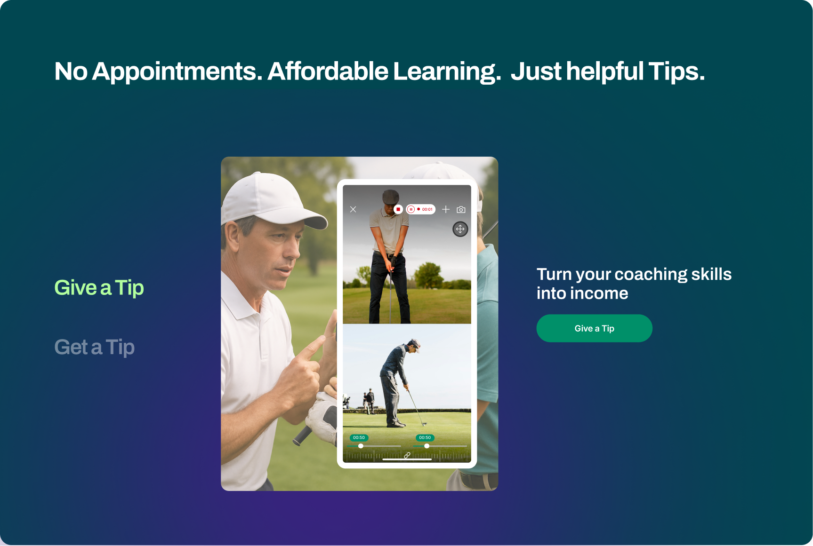
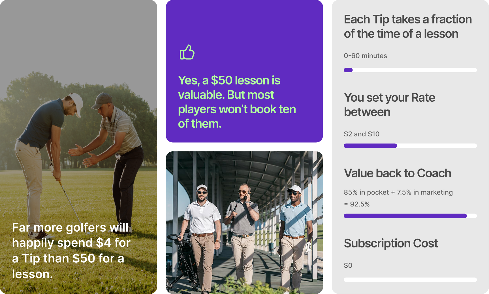
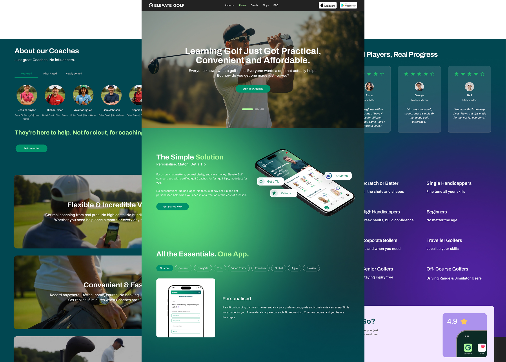
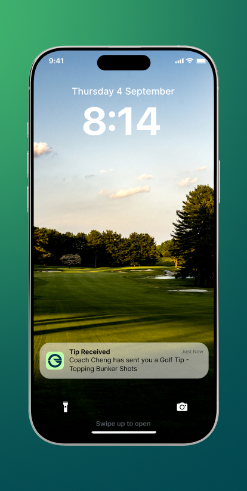
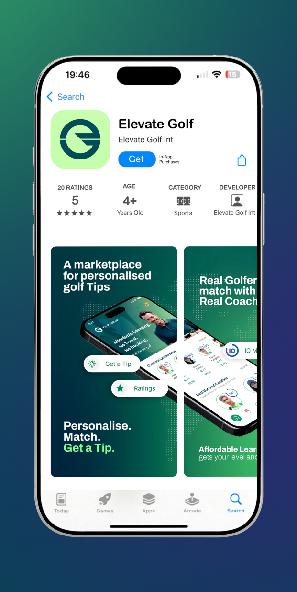

The Challenge
Elevate Golf entered the market with no existing digital presence, requiring a website designed and built entirely from the ground up. The project demanded clear thinking, strong communication, and the ability to juggle multiple moving parts at once. Dual user groups: The website needed to speak equally well to two very different audiences players seeking affordable coaching, and coaches looking to grow a flexible business within one cohesive experience. High volume of content: From IQ Match™ and bento grids to step-by-step journeys and earning calculators, the platform had a lot to say. Structuring it clearly without overwhelming the visitor was a constant challenge.


The Approach
Research-first. The process kicked off by studying golf platform design patterns and client-provided references to establish the right visual direction. Two audiences, two pages: Players and coaches each got a dedicated page elevategolf.com/player and /coach designed to speak directly to their unique goals, motivations and pain points. IA defined early, refined often: The site structure was confirmed upfront, with section placements fine-tuned through every client call. Iterative by nature: Regular reviews, continuous refinement, and close collaboration kept the design moving forward until every page was launch-ready.

The Solution
The final website strikes the right balance — visually strong, on-brand, and immediately recognisable as a golf platform. The green and purple colour system came together cohesively, with each colour playing an intentional role across UI elements and components. Consistent & thoughtful components: A unified design language was maintained across every page from the homepage feature cards and coach carousels to the bento grids and step-by-step journey sections with each element purposefully chosen and placed. Speaks to both audiences: The final experience successfully guides both players and coaches to what matters most to them, fulfilling the platform's core purpose from day one.

Design Highlights
The website needed to communicate a lot without overwhelming. Every major design decision was made with clarity and visual impact in mind. Bento Grid on Coach page: A rich mix of image cards, stat blocks, and bold typography laid out in a bento-style grid, making the earning model instantly scannable and visually compelling. The Dual Split: Get a Tip / Give a Tip A single section that cleanly divides the platform into two worlds. Players and coaches each see their own visual identity, messaging and CTA communicating the dual audience concept in one powerful moment. Step-by-step Journey flows: Both the Player and Coach pages feature their own dedicated journey sections, breaking down a complex process into a simple, visual, easy-to-follow flow.


The Outcome
After months of research, iteration, and close collaboration, Elevate Golf went live and the response said it all. The platform launched successfully, resonating with both players and coaches exactly as intended. The moment that made it all worth it? The Elevate Golf ad lighting up a Times Square London screen. From a blank canvas to a globally visible brand it was a proud milestone for the team and a testament to the work put in. The client was thrilled, the team was celebrated, and the website stood as proof that great design, even through a challenging process, always finds its way to a great result. Working on Elevate Golf was a journey challenging, rewarding, and ultimately something the entire team is proud of. Watching it go from a blank canvas to a globally visible brand was a moment none of us will forget.

